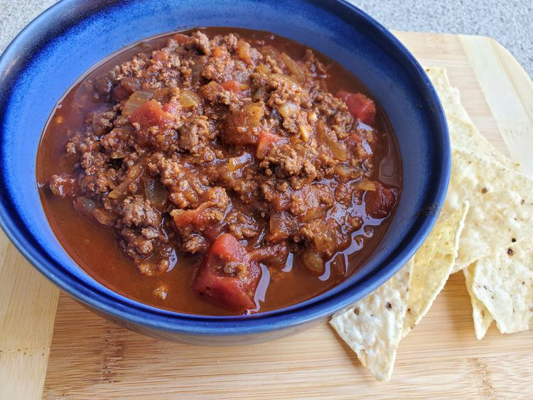

Back to Recipes
Slurp-Worthy
Chili Recipe

Description
This chili recipe has no beans and is packed with flavor. My husband won't eat beans but loves chili, so I had to create this variation on an old favorite. I used lots of canned tomatoes and onion in this dish which is great served over rice with shredded cheese and sour cream.
Ingredients
- 1 pound ground beef
- 1 large onion, chopped
- 2 cloves garlic, minced
- 2 tablespoons chili powder
- 1 teaspoon dried oregano
- 1 teaspoon ground cumin
- 1 teaspoon hot pepper sauce
- 1 (28 ounce) can crushed tomatoes
- ¼ cup red wine vinegar
Steps
- Heat a large stockpot or Dutch oven over medium-high heat. Crumble beef into the hot stockpot. Add onion and garlic; cook and stir until beef is evenly browned. Drain off excess grease.
- Stir in chili powder, oregano, cumin, and hot sauce. Pour in tomatoes and vinegar; bring to a boil. Reduce heat to low and simmer for at least 1 hour, stirring occasionally to prevent the bottom from burning.
Please visit the original No-Beans-About-It Recipe by GinaGina.